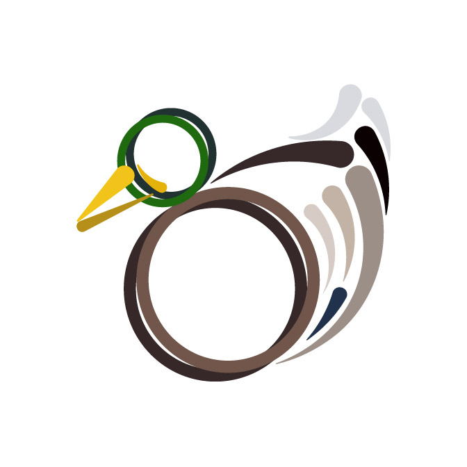
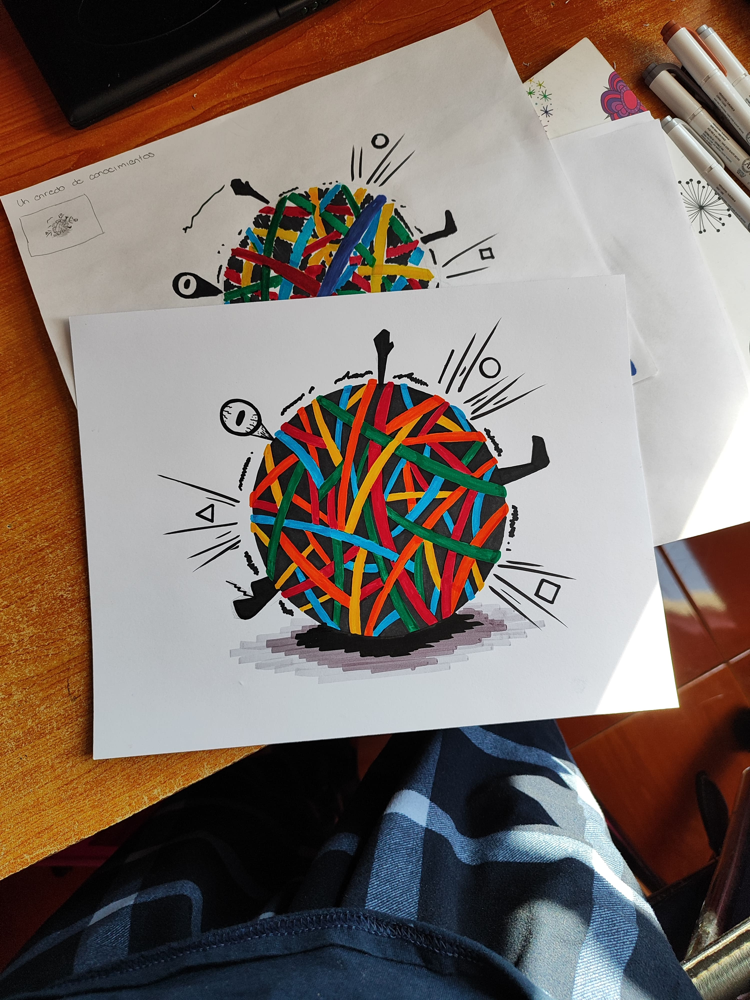
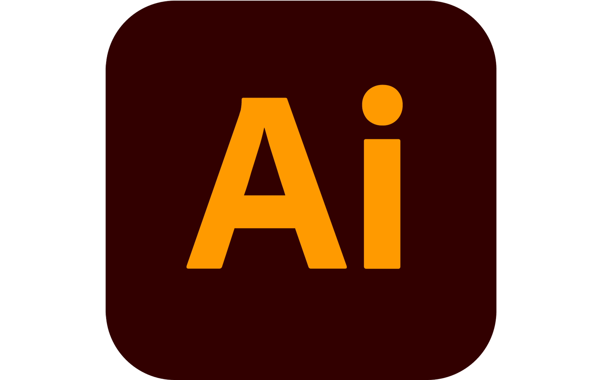
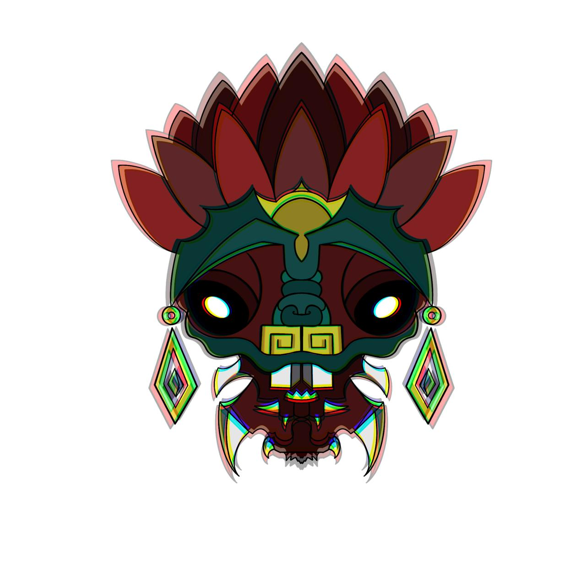
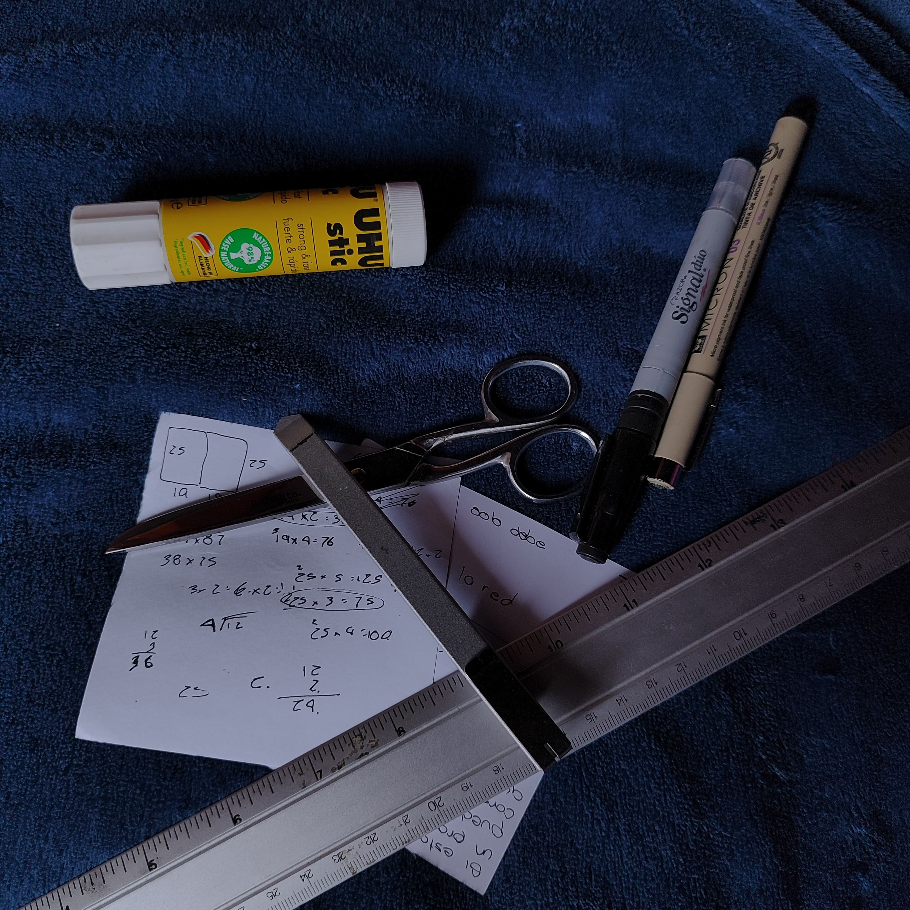

GUSTOS
Aprecio la vida que tengo. Dentro de mis gustos reflejo el como soy. Me gustan los patos por lo tranquilos y pacificos que pueden ser. La sencilles, el orden, la confianza y la empatia es lo que me definen como persona.

Aprecio la vida que tengo. Dentro de mis gustos reflejo el como soy. Me gustan los patos por lo tranquilos y pacificos que pueden ser. La sencilles, el orden, la confianza y la empatia es lo que me definen como persona.
Habilidades

Una de mis habilidades es poder trabjar bajo presion. Al mantenerme siempre ordenado no se me dificulta mantenerme acorde a lo que esta pasando en el momento. Aun que devo admitir que todo tiene un limite, asi que igual puedo fallar. Soy demasiado aguil, responsable, fuerte, actuo rapido y siempre me mantengo con buenos animos
Me forme en la Universida Autonoma Metropolitana de la Unidad Azcapotzaldo, en la carrera de Diseño de la comunicacion grafica. Dentro de mis labores destaco la creacion de medios audiovisuales, que es lo que mas amo haver. Añadiendo que se aserca de la creacion de logotipos para marcas y el diseño de revistas en el ambito editorial.
These cases are perfectly simple and easy to distinguish. In a free hour, when our power of choice is nothing prevents our being able to do what we like best, every pleasure is to be welcomed and every pain avoided.



Disfruto de la ilustración y soy un apasionado de la animación; siempre busco expandir mis conocimientos en estas dos áreas. Me considero una persona tranquila, con una mente dispersa y reflexiva, lo cual considero una gran ventaja que nutre directamente mi creatividad.
Habilidades

Sé trabajar muy bien bajo presión, un entorno donde logro potenciar mis mejores proyectos. Resuelvo problemas de forma efectiva, y me considero una persona flexible, resiliente y con gran facilidad para el trabajo en equipo.
Soy Diseñador de la Comunicación Gráfica egresado de la UAM Azcapotzalco. Mis mayores fortalezas se centran en la ilustración y en la creación de identidad de marca, áreas que domino con facilidad. Actualmente me encuentro expandiendo mis habilidades en el aprendizaje de animación 2D y 3D.ProgramasAdobe IllustratorAdobe InDesignProcreate
The wise man therefore always holds in these matters to this principle of selection: he rejects pleasures to secure other greater pleasures, or else he endures pains to avoid worse pains.
Un breve video demostrativo de nuestras capacidades | Video sonorizado